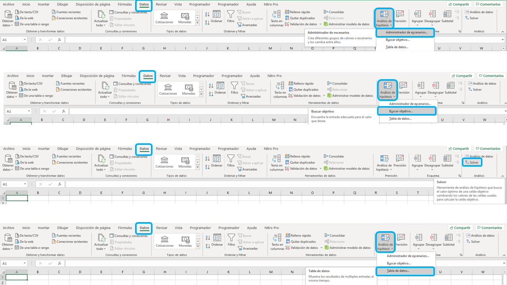

Análisis de sensibilidad tradicional¶
En esta sección se explicarán el análisis de sensibilidad tradicional en Excel usando Solver, tabla de datos y administrador de escenarios.
Descargue aquí el achivo de Excel con los datos iniciales.
Descargue aquí el achivo de Excel con la solución.
Administrador de escenarios:¶
Permite analizar el efecto que tienen varios escenarios sobre los resultados. Generalmente, los escenarios son la modificación de algunas variables y los resultados son el VPN o la TIR.
Buscar objetivo:¶
Herramienta de optimización que permite hallar una solución dado un objetivo. No tiene en cuenta restricciones en las variables. Generalmente, se pretende obtener cierto valor para el VPN o TIR al cambiar algunas variables.
Solver:¶
Herramienta de optimización que permite hallar una solución dado un objetivo y unas restricciones. Generalmente, el objetivo está el obtener cierto valor para el VPN o para la TIR al cambiar algunas variables y con ciertas restricciones.
Tabla de datos:¶
Realiza los cálculos al mismo tiempo al cambiar los valores de una o varias variables.
{kind=link}
